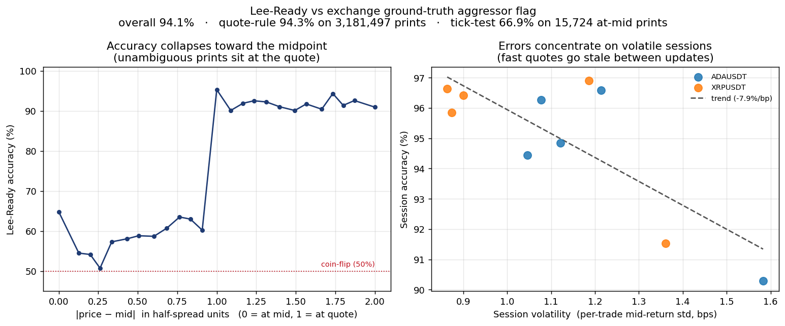
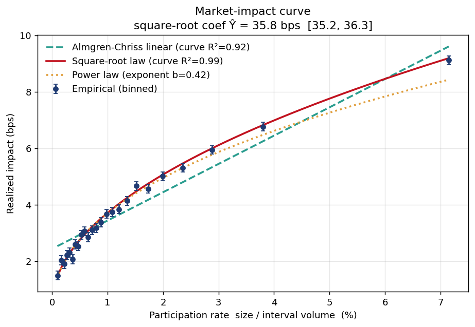
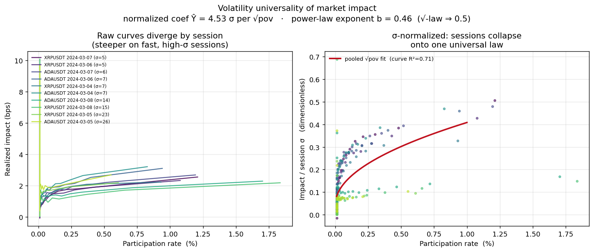
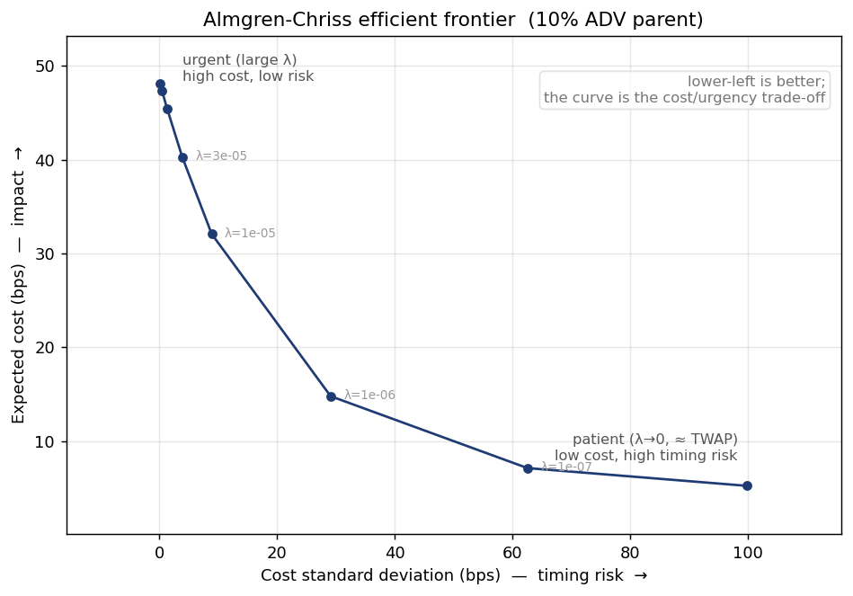
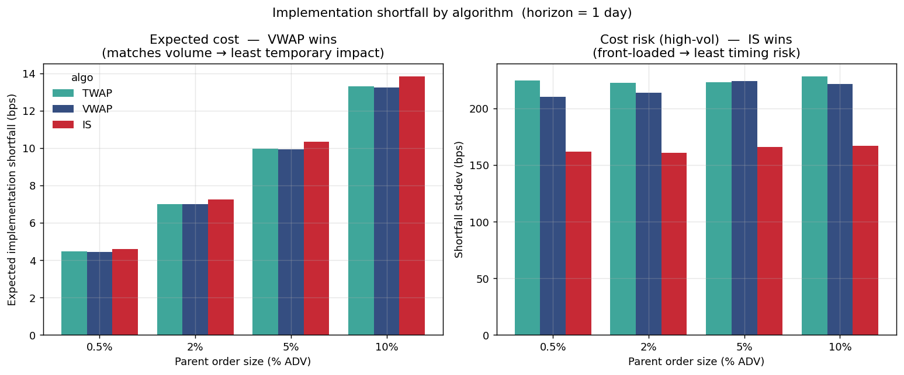
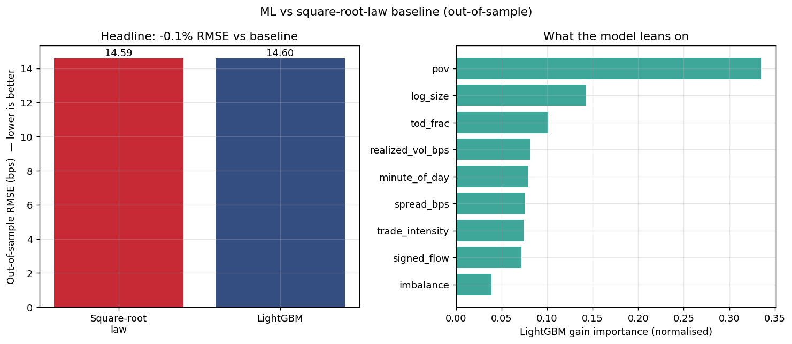
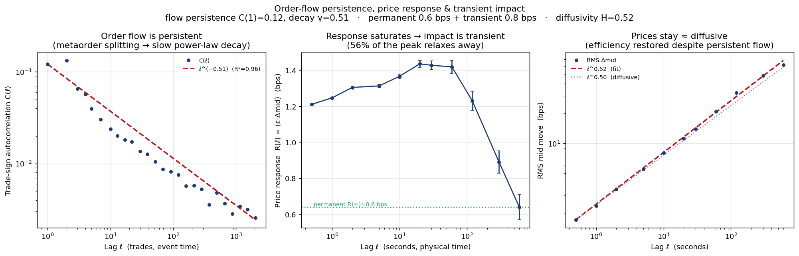
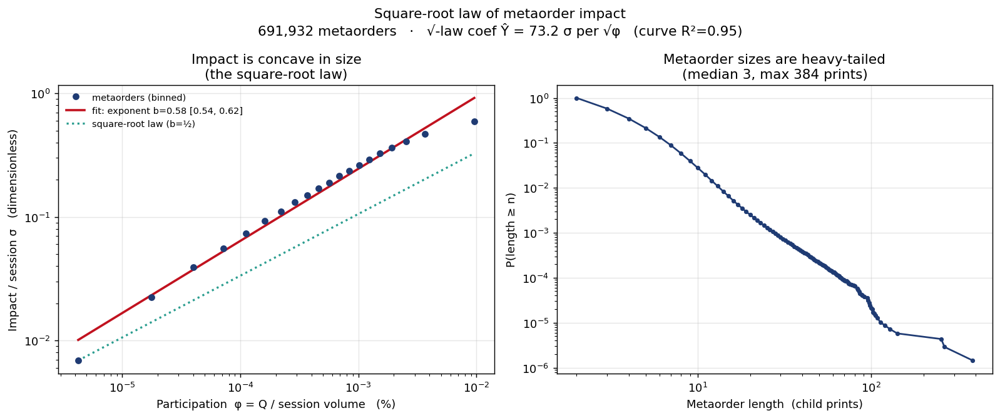
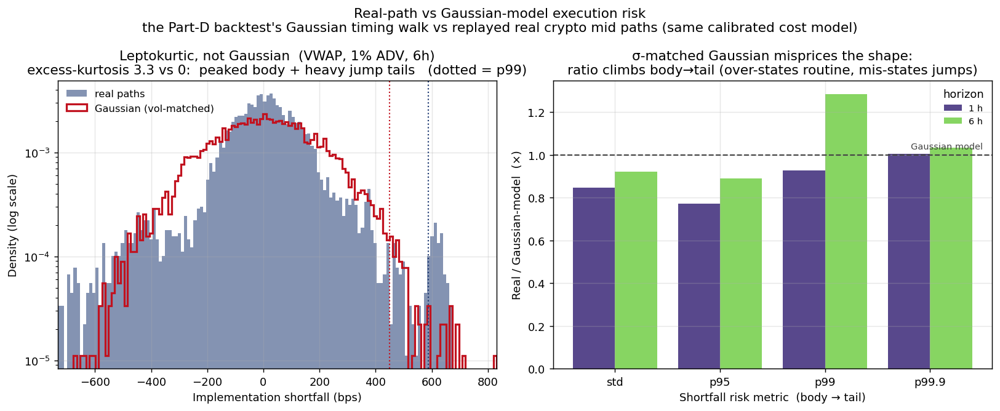
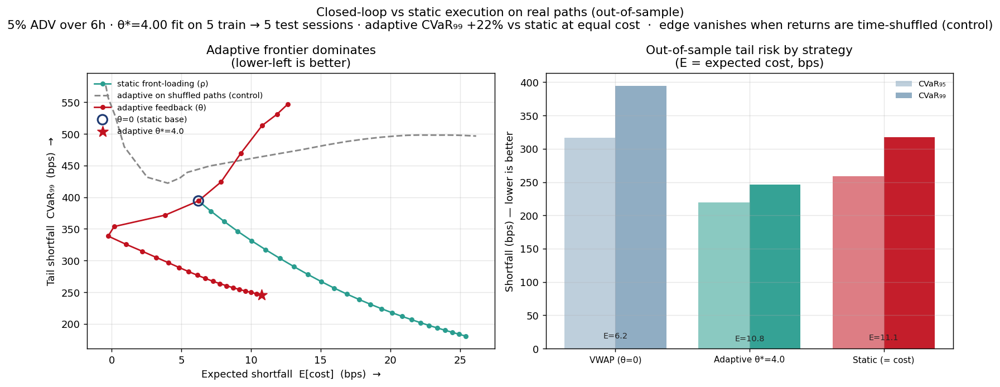

Market-Impact & Optimal Execution
When you trade size, how much does the market move against you — and what is the least-costly way to get the order done? An end-to-end framework that measures impact from a trade-and-quote tape, fits it to the canonical models, backtests optimal execution — and then asks, honestly, whether machine learning beats the parametric baseline.
- Impact law
- √pov · R²=0.99
- Sign accuracy
- 94.1% vs truth
- ML vs baseline
- honest no
- Coverage
- 57 tests · 9 parts
§ 01 / The questions
Two questions every trading desk pays people to answer.
How much does trading size move the market, and what schedule executes a parent order at least cost? The framework answers both with measured numbers from a re-runnable, five-stage pipeline — not a 2,000-line notebook, but importable, tested modules with 57 passing tests.
A synthetic TAQ generator embeds a known impact law, so recovering it validates the measurement code; the same code then runs on real WRDS TAQ and on free Binance crypto microstructure, which uniquely carries the exchange's true aggressor flag — a ground truth equities tapes lack. The synthetic numbers validate the machinery; the crypto results carry the real-market evidence.
§ 02 / The tape · part A
A clean, signed trade tape.
Trades are aligned to the prevailing NBBO with a backward merge_asof, then
signed with Lee & Ready (1991) — the quote rule with a vectorised
tick-test tiebreaker. Against the crypto ground-truth aggressor flag (3.2 M signed
prints, 10 sessions), Lee-Ready is 94.1% accurate: the quote rule is
94.3% off-mid, and the tick test — needed on only 0.5% of prints — is 66.9%,
degrading on fast sessions exactly as the stale-quote failure mode predicts.

§ 03 / Impact law · part B
The square-root law, recovered.
For every print we measure realized impact in basis points against the participation
rate pov, at a primary 5-second horizon (short enough to
isolate one print, before autocorrelated order flow inflates the estimate). Three
models are fit to the binned curve:
| Model | Form | Binned-curve R² | Per-trade OOS R² |
|---|---|---|---|
| Almgren-Chriss linear | b₀ + b₁·pov | 0.920 | 0.010 |
| Square-root law | c₀ + c₁·√pov | 0.993 | 0.012 |
| Power law (free exponent) | a·pov^b | 0.989 | — |
The square-root law wins, and the free exponent is b = 0.41 [0.39, 0.43] — close to ½, consistent with the empirical literature. Fit against the known synthetic truth (32.0 bps), the with-intercept estimate is 32.3 bps [31.0, 33.7]; a through-origin fit is biased up to 35.7 bps because the slope absorbs the intercept and order-flow autocorrelation — reporting both, and explaining the gap, is the honest treatment. (Per-trade OOS R² is tiny for every model because single-print impact is ~99% noise — which is why the binned curve and large-sample coefficient, not a per-trade R², are the right summaries.)


§ 04 / Execution · part C
Almgren-Chriss & the efficient frontier.
The closed-form liquidation trajectory minimizing E[cost] + λ·Var[cost] is
implemented and validated three ways in pytest: boundary conditions and the
TWAP linear limit, the discrete Euler-Lagrange identity, and an independent
tridiagonal solve matching the closed form to 1e-6. Sweeping the risk-aversion
λ traces the efficient frontier: for a 10%-ADV parent, expected cost
ranges 4.7 → 47.6 bps as cost std-dev falls 100 → 0 bps. That convex
curve is the cost-vs-urgency trade-off that defines the field.

§ 05 / Backtest · part D
No algo dominates.
A Monte-Carlo simulator works a parent order with TWAP, VWAP, or Implementation-Shortfall schedules, charging temporary impact per child, a schedule-independent permanent term (avoiding the concave-super-additivity trap), half-spread, fees, and zero-mean timing risk. Scored over 1,500 paths per scenario: VWAP has the lowest expected cost (constant participation ⇒ least temporary impact) while IS has the lowest variance (front-loading ⇒ least timing exposure). Which wins depends entirely on risk aversion — the crossover λ* is small in timing-dominated regimes and larger in impact-dominated ones.
| Algo | %ADV | mean (bps) | std (bps) | note |
|---|---|---|---|---|
| TWAP | 10 | 12.81 | 56.2 | |
| VWAP | 10 | 12.76 | 53.4 | min cost |
| IS | 10 | 13.35 | 40.4 | min risk |

§ 06 / ML · part E
The central honest result.
LightGBM is trained on features computable before each print — participation, log size, spread, rolling order-flow imbalance, realized volatility, trade intensity, time-of-day — and compared to the square-root baseline under a purged, embargoed, forward-chaining time-series split, both models refit per fold.
Result — LightGBM does not beat the baseline. −0.1% RMSE (14.66 vs 14.64), OOS R² 0.010 vs 0.012, baseline winning 3 of 5 folds. The two are statistically indistinguishable.
The model's gain-importances confirm it found the structure — pov
dominates (0.34), then log_size, then the deliberately-planted secondary
signals — but those sit far below the per-trade noise floor, so capturing them doesn't
improve out-of-sample accuracy. With a noisy target and a thin systematic signal, a
parsimonious model that encodes the right functional form generalizes as well as, and
is more interpretable than, a flexible learner. The framework reports whichever
is true — here, honestly, the baseline.

§ 07 / Real data · parts F–I
Free crypto microstructure.
Because WRDS needs a paid subscription, the framework also runs on free Binance USD-M futures data — whose true aggressor flag turns the pipeline into a validated measurement instrument on real order flow. Four population-level results single prints cannot give:




§ 08 / Limitations
Stated plainly.
Synthetic headline. Parts A–E validate the pipeline against a known generating process, not the market; the crypto extensions are the real-data evidence. Equity-market claims require a WRDS pull.
Crypto caveats. Top-of-book only (no depth/queue); metaorders are reconstructed from anonymous tape (a proxy); the closed-loop evaluation uses overlapping windows over ten sessions, so the magnitude is indicative and the direction is the robust claim.
Reduced-form backtest. A calibrated cost model, not a live order book — it captures the first-order cost/risk trade-off but not queue dynamics or adverse selection; the frontier and backtest use related but separately-calibrated parameters.
Every number reproduces from a clean checkout.
Five-stage synthetic pipeline plus the free-crypto extensions, 57 tests, and the full write-up in report/report.md.